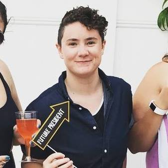

About Sara:
Sara Patterson is a New York-based audio producer. Her experience in podcasting ranges from episode planning to post-production. She’s originally from Philadelphia and studied Journalism with a focus on Broadcast Production at Temple University. At Temple, she covered LGBTQIA news from The Temple News and Philadelphia Neighborhoods and helped produce the first season of Temple’s talk show, A Broader View.
An avid podcast listener, she moved to New York City in 2015 to begin her career in podcast producing. Since then, she’s worked on a variety of shows, both daily and weekly, covering a range of topics from sports and data to business and economics. She shares her Queens apartment with her kitten, Cat McKinnon.
 @sarapatt
@sarapatt
 linkedin
linkedin
 patterson.e.sara@gmail.com
patterson.e.sara@gmail.com